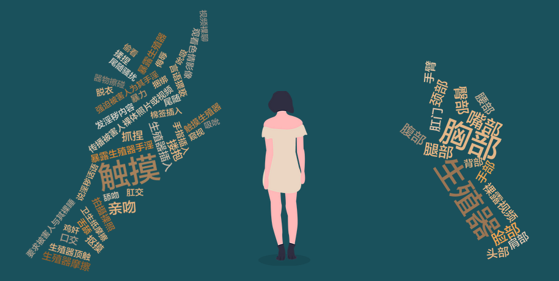

“我必须写下来，墨水会稀释我的感觉，否则我会发疯的。我下楼拿作文给李老师改。他掏出来，我被逼到贴在墙上老师说了九个字：“不行的话，嘴巴可以吧。”我说了五个字：“不行，我不会。”他就塞进来.那感觉像溺水。”尽管《房思琪的初恋乐园》是一本半虚构的小说，但文中的国文老师李国华对13岁的少女房思琪进行的长达五年的性侵，却是现实中无数个“房思琪”真实遭遇的缩影。

生殖器、胸部、嘴部、臀部，是被提及次数最多的遭到猥亵的部位。猥亵方式中，触摸、亲吻、搂抱、生殖器插入、抠摸、生殖器摩擦出现频率较高，同时，一些没有直接触碰被害人的猥亵方式也应该被注意，例如给儿童观看色情录像、拍摄儿童的裸体照片或视频、言语猥亵。
利用互联网性侵未成年人的案件也亟需关注。犯罪嫌疑人通过网络聊天等软件结识未成年人，利用未成年人认知、辨别和反抗能力较差的特点，采取欺骗、诱惑等方式获得未成年人的裸照或者视频，甚至进一步发展到在现实中的性关系。
然而与之相对的是，家长对于儿童使用手机、电脑等上网的监管存在缺位。在2018年及2019年的“女童保护”报告中，都只有大约42%的家长会对孩子上网进行严格监管。
受到性侵害无疑会对儿童的生理和心理造成伤害。从生理层面来说，常见的伤害有生殖器损伤、早孕、流产、感染性病，长期来看，可能导致癌变或者不孕不育等。从精神和心理层面来说，被性侵害后的儿童会表现出恐惧、不安、自闭、做噩梦，出现精神问题和成年后适应社会困难等。行为层面上，儿童可能会对自己产生扭曲的看法，产生羞耻感，做出自残、自杀行为，或进行模仿产生攻击性的行为，让性侵害蔓延扩展等。
现实中的房思琪——本书的作者林奕含，在被老师性侵后患上重度抑郁症，多次自杀，她在婚礼上讲述了她因疾病而产生的解离“肉体受到的创痛太大了，以至于我的灵魂要离开我的身体，我才能活下去“，然而最终，她还是结束了自己的生命。